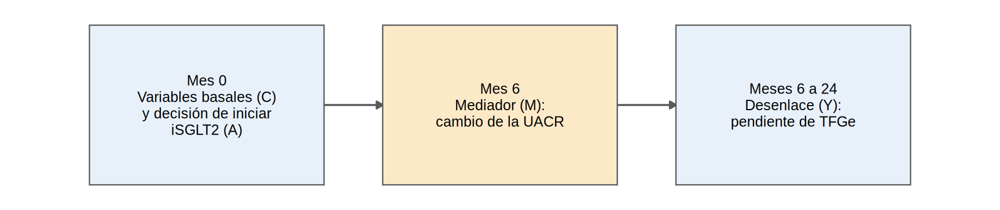
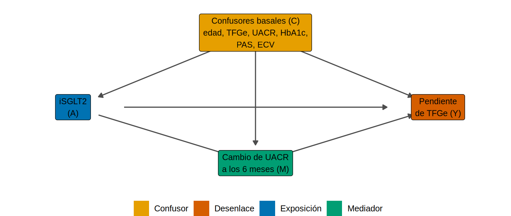
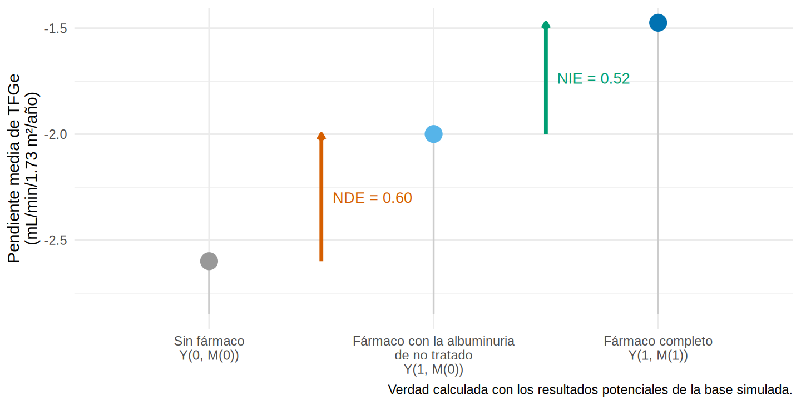

Efecto total, directo e indirecto: ¿por dónde actúa el fármaco?
Nota🩺 Escenario
El iSGLT2 baja la albuminuria y enlentece la pérdida de TFGe. En la sesión clínica alguien pregunta: “¿funciona porque baja la albuminuria?”. Si fuera así, la albuminuria serviría como marcador para seguir al paciente (y para diseñar ensayos más cortos). Si no, el fármaco protege el riñón por otras vías y la albuminuria sería solo un testigo. Esa es una pregunta de mediación.
Hasta ahora preguntábamos “¿cuánto cambia Y si cambio A?”. Ahora preguntamos por dónde viaja ese efecto: ¿pasa a través de una variable intermedia o va por otro camino? La variable intermedia se llama mediador.
Lo que vamos a hacer
- Reconocer un mediador en un DAG y distinguirlo de un confusor y de un colisionador (Cap. 3.3).
- Definir efecto total, directo y indirecto con resultados potenciales y calcularlos con la verdad de datos simulados.
- Ver por qué la proporción mediada es una cifra frágil.
Los datos (simulados)
Usamos ckd_mediacion, una base simulada (5 000 adultos con ERC y diabetes, ver R/simular_mediacion.R) con la misma lógica que ckd_isglt2, pero con una línea de tiempo pensada para mediación (más adelante usaremos dos variantes de la misma base: una con interacción fármaco × mediador y otra con un confusor no medido):
El orden en el tiempo importa: el mediador se mide después del tratamiento y antes del desenlace. Si no fuera así, no podría ser un eslabón de la cadena.
oraculo <- cargar_mediacion() # SIMULADO, con los resultados potenciales de cada paciente (la "verdad")
ckd <- observar_mediacion(oraculo) # lo que vería un investigador real
ckd |>
group_by(isglt2) |>
summarise(n = n(),
uacr_basal_mediana = median(uacr_basal),
cambio_uacr_pct = 100 * (exp(mean(delta_lnuacr)) - 1),
pendiente_media = mean(pendiente_tfg)) |>
mutate(across(where(is.numeric), \(x) round(x, 1)))# A tibble: 2 × 5
isglt2 n uacr_basal_mediana cambio_uacr_pct pendiente_media
<dbl> <dbl> <dbl> <dbl> <dbl>
1 0 2753 99 11.5 -2.5
2 1 2247 162 -24.2 -1.5Qué vemos. En los tratados la UACR baja 24 % en promedio y en los controles sube 11 %. El mediador es el cambio del logaritmo natural de la UACR (delta_lnuacr): la diferencia entre tratados y controles es de -0.35 en esa escala, es decir, ~30 % menos de albuminuria. Los tratados también tienen mejor pendiente de TFGe. Hasta aquí, solo asociaciones.
Paso 1. ¿Qué es un mediador? Dibujarlo
Un mediador es una variable que es consecuencia de la exposición y causa del desenlace. En el DAG está en medio de la flecha:
nodos <- tribble(~nombre, ~x, ~y, ~etiqueta, ~rol,
"C", 2, 2, "Confusores basales (C)\nedad, TFGe, UACR, HbA1c,\nPAS, ECV", "confusor",
"A", 1, 1, "iSGLT2\n(A)", "exposicion",
"M", 2, 0.25, "Cambio de UACR\na los 6 meses (M)", "mediador",
"Y", 3, 1, "Pendiente\nde TFGe (Y)", "desenlace")
aristas <- tribble(~de, ~a,
"C", "A", "C", "M", "C", "Y",
"A", "M", "M", "Y", # camino indirecto: A -> M -> Y
"A", "Y") # camino directo: A -> Y
dibujar_dag(nodos, aristas, tam_texto = 3.3, expandir = c(0.2, 0.25))
Hay dos caminos causales de A a Y:
- Directo: A → Y. Todo lo que el fármaco hace a la TFGe sin pasar por la albuminuria (efecto hemodinámico, metabólico…).
- Indirecto: A → M → Y. Lo que el fármaco hace a través de la albuminuria.
Recuerda la comparación del Cap. 3.3: un confusor es causa de A y de Y (se ajusta); un colisionador es consecuencia de A y de Y (no se ajusta); un mediador es consecuencia de A y causa de Y. A diferencia de los otros dos, el mediador no es un problema que haya que resolver: es el objeto de estudio.
Paso 2. Primera aproximación con regresión (y su trampa)
Con regresión lineal hay dos modelos para el desenlace. Los dos llevan los confusores basales; la diferencia es si incluyen el mediador:
sin_mediador.isglt2 con_mediador.isglt2
1.11 0.61 El coeficiente del iSGLT2 pasa de 1.11 a 0.61 mL/min/1.73 m²/año al añadir el mediador. ¿Cuál es “el efecto del iSGLT2”?
- El modelo sin el mediador estima el efecto total: todo lo que el fármaco hace, por cualquier camino.
- El modelo con el mediador estima, bajo supuestos que veremos en 18.3, el efecto directo: lo que queda cuando “congelamos” la albuminuria.
Advertencia⚠️ Ajustar por el mediador cuando quieres el efecto total
Es el error más frecuente (y el primo de la Table 2 fallacy del 8.6): meter en el modelo “todas las variables que se asocian con el desenlace”, incluida la albuminuria posterior al tratamiento. El resultado (0.61) no es “el efecto ajustado”: es el efecto sin el camino que pasa por la albuminuria. Si tu pregunta es “¿sirve el fármaco?”, no ajustes por el mediador. Si tu pregunta es “¿por dónde actúa?”, entonces sí necesitas ambos modelos, y hay que hacerlo con método (18.2) y con supuestos (18.3).
Paso 3. La definición: resultados potenciales de dos niveles
Para decir qué es un efecto “directo” hay que precisarlo con resultados potenciales (Cap. 3.2). Cada paciente tiene ahora:
- \(M(a)\): el cambio de albuminuria que tendría si recibiera el tratamiento \(a\) (0 = no, 1 = sí).
- \(Y(a, m)\): la pendiente de TFGe que tendría con el tratamiento \(a\) y con un cambio de albuminuria igual a \(m\).
- Su resultado potencial “de siempre” es \(Y(a) = Y(a, M(a))\): tratamiento \(a\) y la albuminuria que ese tratamiento produce.
Con esto se definen tres efectos (promediados sobre los pacientes, \(E[\cdot]\)):
\[ \underbrace{E[Y(1,M(1)) - Y(0,M(0))]}_{\text{total (TE)}} = \underbrace{E[Y(1,M(0)) - Y(0,M(0))]}_{\text{directo natural (NDE)}} + \underbrace{E[Y(1,M(1)) - Y(1,M(0))]}_{\text{indirecto natural (NIE)}} \]
Hay que leerlo despacio. El NDE es el efecto de dar el fármaco dejando la albuminuria como habría sido sin él: es el camino A → Y puro. El NIE es el efecto de cambiar la albuminuria de la que el paciente habría tenido sin fármaco a la que tiene con él, manteniendo el fármaco puesto: es el camino A → M → Y. La suma es el total (los términos intermedios se cancelan).
El detalle incómodo es \(Y(1, M(0))\): “tratado, pero con la albuminuria de no tratado”. Ningún paciente real vive ese mundo (es un contrafactual “de mundos cruzados”). Por eso el NDE y el NIE exigen supuestos más fuertes que el efecto total. Como los datos son simulados, aquí sí tenemos todas las columnas:
oraculo |>
slice(1:5) |>
transmute(id, tratamiento = if_else(isglt2 == 1, "iSGLT2", "Control"),
`Y(0,M(0))` = y00, `Y(1,M(0))` = y10, `Y(1,M(1))` = y11,
`Y observado` = pendiente_tfg) |>
knitr::kable(digits = 2)| id | tratamiento | Y(0,M(0)) | Y(1,M(0)) | Y(1,M(1)) | Y observado |
|---|---|---|---|---|---|
| 1 | Control | -2.66 | -2.06 | -1.53 | -2.66 |
| 2 | iSGLT2 | -3.47 | -2.87 | -2.35 | -2.35 |
| 3 | Control | -2.80 | -2.20 | -1.68 | -2.80 |
| 4 | Control | -3.20 | -2.60 | -2.07 | -3.20 |
| 5 | iSGLT2 | -1.19 | -0.59 | -0.06 | -0.06 |
Qué vemos. Cada paciente tiene tres números potenciales, pero solo uno coincide con lo observado: el \(Y(1,M(1))\) de los tratados, o el \(Y(0,M(0))\) de los controles. El \(Y(1,M(0))\) del medio nunca se observa en nadie. Calculemos los efectos con el promedio de cada columna (la verdad):
# A tibble: 1 × 3
`Y(0,M(0))` `Y(1,M(0))` `Y(1,M(1))`
<dbl> <dbl> <dbl>
1 -2.6 -2 -1.47 TE NDE NIE
1.125 0.600 0.525 El promedio sube de -2.60 (sin fármaco) a -2.00 (fármaco, pero albuminuria de no tratado) y a -1.47 (fármaco completo). La figura lo muestra como una escalera de dos peldaños (cada punto es el promedio de la columna):
esc <- tibble(paso = factor(c("Sin fármaco\nY(0, M(0))", "Fármaco con la albuminuria\nde no tratado\nY(1, M(0))", "Fármaco completo\nY(1, M(1))"),
levels = c("Sin fármaco\nY(0, M(0))", "Fármaco con la albuminuria\nde no tratado\nY(1, M(0))", "Fármaco completo\nY(1, M(1))")),
y = unlist(promedios))
ggplot(esc, aes(paso, y)) +
geom_segment(aes(xend = paso, yend = min(y) - 0.25), color = "grey80", linewidth = 0.6) +
geom_point(size = 5, color = c("#999999", "#56B4E9", "#0072B2")) +
annotate("segment", x = 1.5, xend = 1.5, y = esc$y[1], yend = esc$y[2], color = "#D55E00", linewidth = 1.2,
arrow = grid::arrow(length = grid::unit(0.15, "cm"), ends = "last")) +
annotate("segment", x = 2.5, xend = 2.5, y = esc$y[2], yend = esc$y[3], color = "#009E73", linewidth = 1.2,
arrow = grid::arrow(length = grid::unit(0.15, "cm"), ends = "last")) +
annotate("text", x = 1.55, y = mean(esc$y[1:2]), label = paste0("NDE = ", sprintf("%.2f", verdad["NDE"])), color = "#D55E00", hjust = 0, size = 3.6) +
annotate("text", x = 2.55, y = mean(esc$y[2:3]), label = paste0("NIE = ", sprintf("%.2f", verdad["NIE"])), color = "#009E73", hjust = 0, size = 3.6) +
labs(x = NULL, y = "Pendiente media de TFGe\n(mL/min/1.73 m²/año)",
caption = "Verdad calculada con los resultados potenciales de la base simulada.") +
theme_minimal(base_size = 11)
Qué vemos. El efecto total verdadero es 1.12: 0.60 por el camino directo y 0.52 a través de la albuminuria.
Con datos reales no tendríamos esas columnas. En 18.2 veremos cómo estimar el NDE y el NIE con dos regresiones; aquí basta con adelantar que, en esta base, las regresiones los recuperan bien:
Paso 4. La proporción mediada, y por qué hay que desconfiar de ella
Es tentador resumir todo en un porcentaje: la proporción mediada es NIE / TE, es decir, “qué parte del efecto del fármaco pasa por la albuminuria”. Aquí la verdad es 47 %. Parece una cifra clara, pero es frágil por tres razones.
1. Puede ser absurda cuando los efectos van en direcciones opuestas. Imagina un fármaco con un efecto directo dañino que la baja de albuminuria compensa en parte. El total es pequeño y el cociente se dispara. Lo simulamos cambiando un solo parámetro del simulador (theta1, el efecto directo):
escenarios <- list(`Efecto directo +0.6 (nuestra base)` = 0.6, `Efecto directo -0.3` = -0.3, `Efecto directo -0.8` = -0.8)
pm_tab <- map_dfr(escenarios, \(th) {
v <- verdad_mediacion(simular_mediacion(theta1 = th))
tibble(TE = v[["TE"]], NDE = v[["NDE"]], NIE = v[["NIE"]], `proporción mediada (%)` = 100 * v[["PM"]])
}, .id = "escenario")
pm_tab |> mutate(across(where(is.numeric), \(x) round(x, 2)))# A tibble: 3 × 5
escenario TE NDE NIE `proporción mediada (%)`
<chr> <dbl> <dbl> <dbl> <dbl>
1 Efecto directo +0.6 (nuestra base) 1.12 0.6 0.52 46.7
2 Efecto directo -0.3 0.22 -0.3 0.52 233.
3 Efecto directo -0.8 -0.28 -0.8 0.52 -191. Qué vemos. En nuestra base la proporción mediada verdadera es de 47 %. Con un efecto directo de -0.3, el efecto total se achica a 0.22 y la “proporción mediada” salta a 233 %. Con -0.8, el total cambia de signo (-0.28) y la proporción se vuelve negativa (-191 %). Un porcentaje mayor de 100 o negativo no significa nada clínico: es la señal de que NDE y NIE tienen signos opuestos (mediación inconsistente o supresión). En ese caso la proporción no es interpretable y hay que reportar NDE y NIE por separado.
2. Depende de la descomposición elegida cuando hay interacción. El efecto total puede partirse de dos maneras (NDE + NIE, o la “descomposición alternativa” con el indirecto evaluado sin tratamiento). Sin interacción coinciden; con interacción no. Con la versión de la base que incluye interacción exposición × mediador (se estudia en 18.4):
v_int <- verdad_mediacion(cargar_mediacion("_int"))
c(`NIE / TE` = v_int[["NIE"]] / v_int[["TE"]], `NIE alternativo / TE` = v_int[["NIE_alt"]] / v_int[["TE"]]) * 100 NIE / TE NIE alternativo / TE
63.50889 38.10861 Según la descomposición, “la fracción mediada” es 64 % o 38 %. Misma base, mismos pacientes.
3. Es un cociente de dos estimaciones con incertidumbre. Si el denominador (el efecto total) está cerca de 0, la proporción se dispara en muestras pequeñas (lo comprobaremos con simulaciones en 18.2).
Advertencia⚠️ “El X % del efecto está mediado por la albuminuria”
Es la frase que más se escribe y la que menos se sostiene. Reporta NDE y NIE con sus IC, di en qué escala están, y usa la proporción mediada solo si ambos efectos tienen el mismo signo, el total es claramente distinto de cero y no hay interacción. Y recuerda: ni siquiera el NIE es “causal” sin los supuestos de 18.3.
Importante🎯 En resumen
- Un mediador es consecuencia de la exposición y causa del desenlace; se mide después del tratamiento y antes del desenlace.
- Efecto total = efecto directo (A → Y) + efecto indirecto (A → M → Y). El total se estima sin ajustar por el mediador; ajustar por él quita el camino indirecto.
- NDE y NIE se definen con resultados potenciales “cruzados” que nadie observa: sus supuestos son más fuertes que los del efecto total.
- La proporción mediada es frágil (negativa, mayor de 100 %, dependiente de la descomposición). Reporta NDE y NIE.
Ejercicio
- Simula una base con
simular_mediacion(alfa = 0)(el fármaco no modifica la albuminuria). ¿Cuánto valen NIE y proporción mediada verdaderos? ¿Cambia el modelo con y sindelta_lnuacr? - Con
simular_mediacion(beta = 0)el cambio de albuminuria no afecta la TFGe. ¿Qué pasa con el NIE aunque el fármaco siga bajando la albuminuria? - Piensa en la HbA1c basal como exposición y en la UACR basal como mediador (la glucemia alta aumenta la albuminuria, y esta daña el riñón). Dibuja el DAG: ¿qué variables serían confusores y cuál sería el mediador? (Pista: 8.6.)